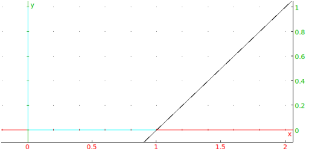

7.7.4 Tangent to a 2D graph: LineTan
The LineTan command draws tangent lines to graphs.
-
LineTan takes two arguments:
-
expr, in the variable x.
- x0, a value of x.
- LineTan(expr,x0) draws the
tangent at x=x0 to the graph of expr.
Example
Input:
LineTan(ln(x),1)
Output:

Input:
equation(LineTan(ln(x),1))
Output: